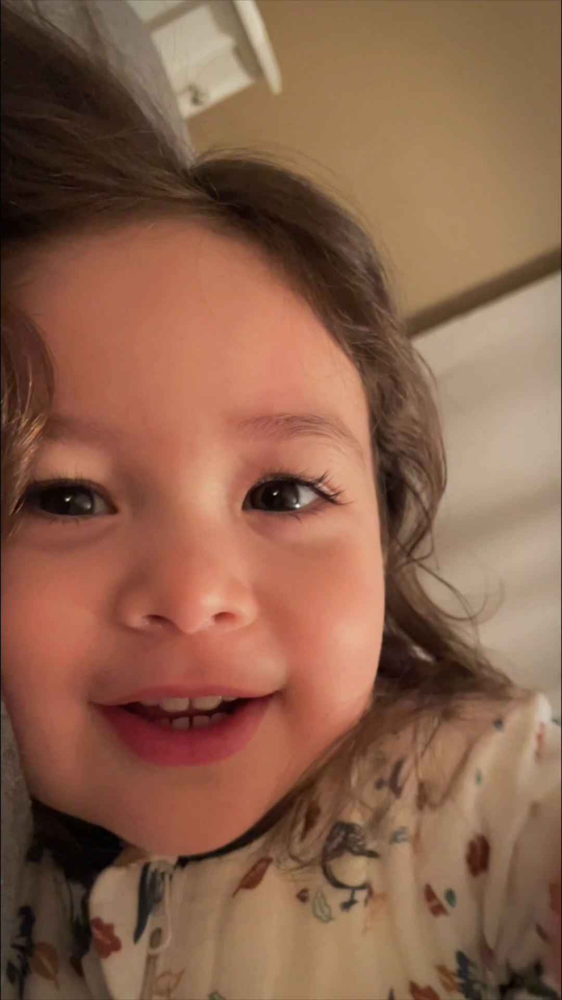
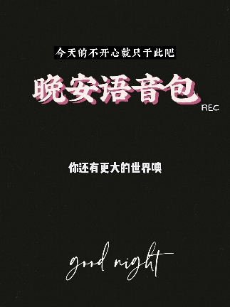
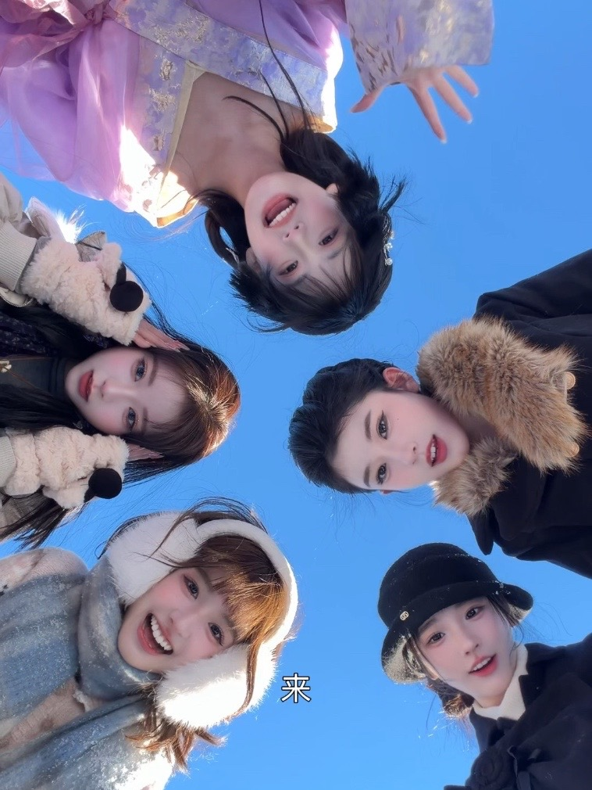
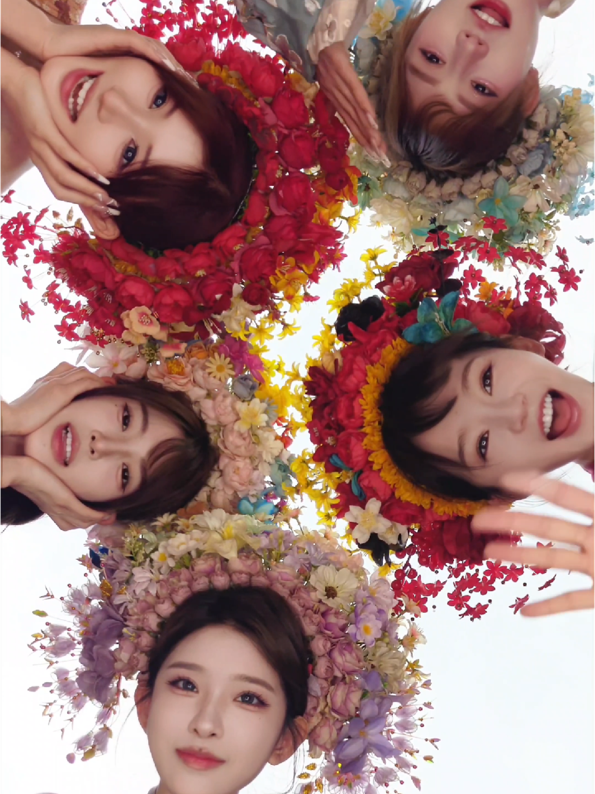
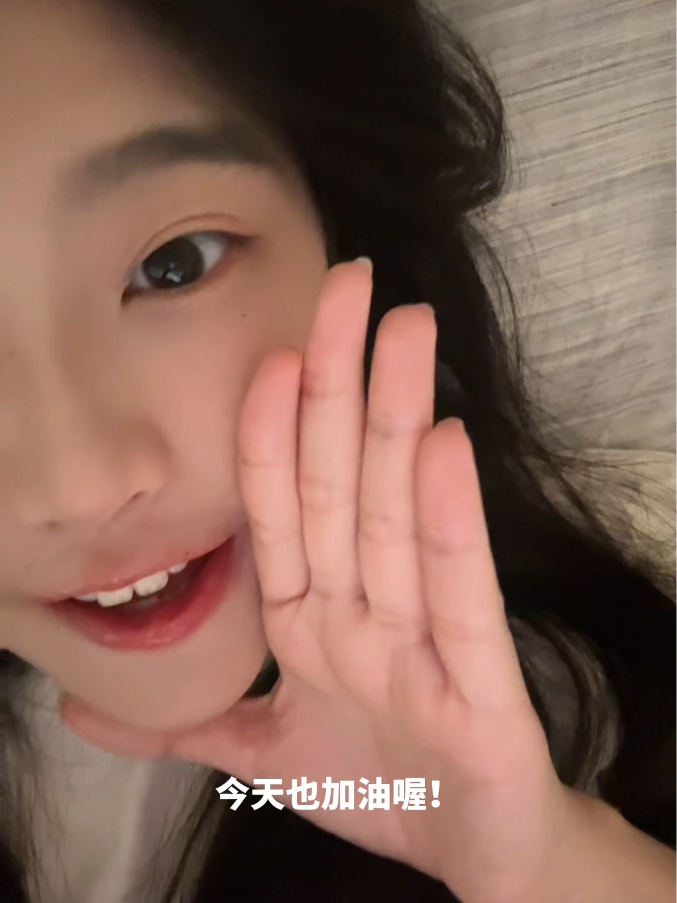
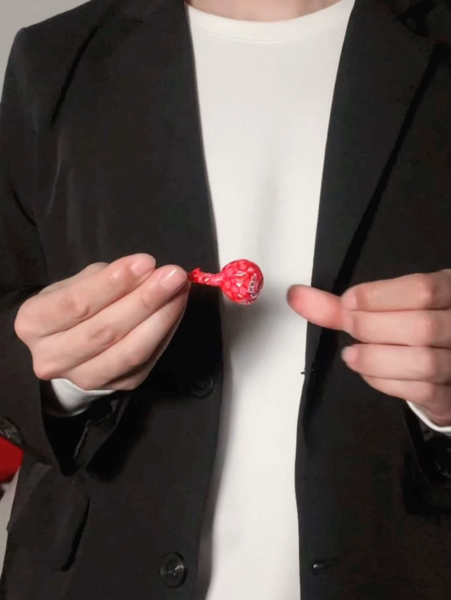
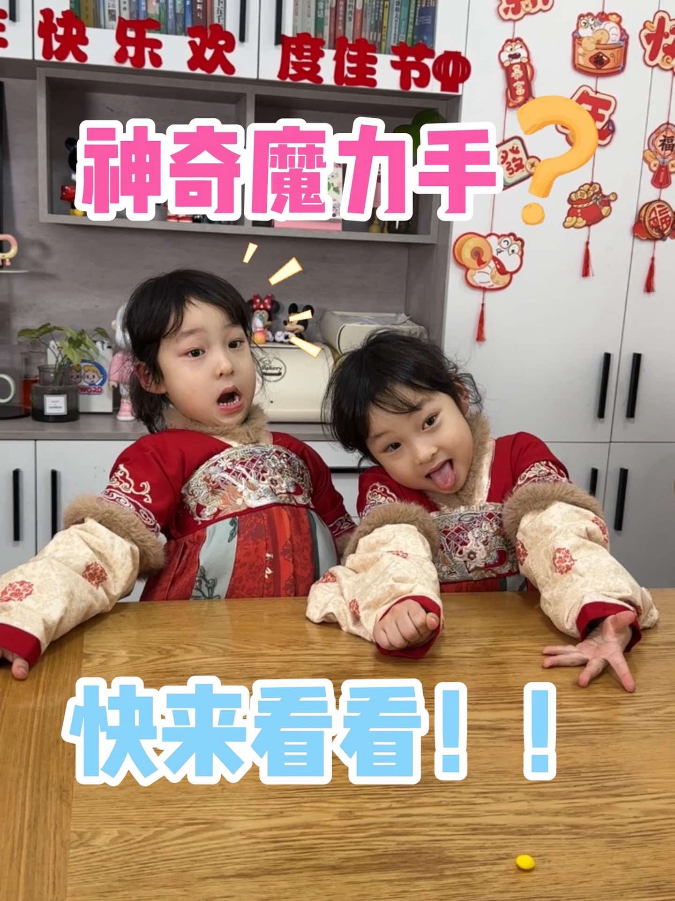

晚安语音结论先看
最适合黄婷婷的不是强剧情，而是“轻声靠近镜头 + 一句专属感 + 一个小动作”。晚安走姐姐式温柔管睡觉，起床走专属叫醒，魔术和小梗服务于官宣 ID、生日 ID 的开头破冰。
140
MediaCrawler 抓取结果
10
抖音搜索关键词
3
语音素材方向
4
可拍摄趣味方案
精选抖音示例
卡片按用途分组，点击按钮可打开原抖音视频。数据来自本次 MediaCrawler 搜索结果，点赞、收藏、转发和评论用于判断方向热度。
晚安语音

晚安语音
起床铃
起床铃
起床铃
零食魔术
零食魔术
饭撒小梗
饭撒小梗
饭撒小梗
适配判断
黄婷婷适合走“亲近但不油”的粉丝向口吻，镜头表达要自然，重点是让粉丝感觉这是专属素材，而不是泛用语音包。
晚安语音
姐姐感 + 轻轻管一下
爆款共性是“怎么还不睡”“该睡觉了”这类轻嗔怪句式。适合她用温柔、慢半拍、靠近麦克风的方式说。
起床铃
专属叫醒 + 可设置铃声
比音乐铃更适合的是“以后换我叫你”“专属叫醒服务”这类人声提醒，粉丝保存动机更强。
趣味开头
动作要短，梗要轻
ID 视频开头建议控制在 3 到 6 秒。魔术只做显现和遮挡，不做复杂手法，避免录制现场反复失败。
可直接录的语音文案
文案按照黄婷婷可说的语气重写，不照搬示例原文。录制时每条建议留两个版本：正常甜度和更轻一点的姐姐版。
晚安语音 1
打扰一下，该睡觉啦。今天已经很辛苦了，手机先放一放，眼睛闭上。今晚的梦要甜一点，明天醒来也要记得开心。晚安，好梦。
参考方向：小甜酒“该睡觉了”、麻勒勒“睡眠提醒铃声”。语气是温柔提醒，不要太撒娇。
晚安语音 2
怎么还没睡呀？不许偷偷熬夜了哦。现在跟我一起倒数，三、二、一，关灯。今天到这里就很好了，剩下的明天再努力。晚安。
参考方向：元呆呆“怎么还熬夜呢”。适合粉丝循环听，最后“晚安”要轻一点。
起床铃
起床啦，专属叫醒服务开始。再赖床一分钟，就要被我先吃掉啦。早安，今天也要元气满满地出门。
参考方向：月如雪“起床啦”、芊芊一条龍“以后换我叫你”。可以把“吃掉”替换成具体产品名。
魔术和小梗脚本
全部按“好学、不容易出错、能结合产品零食”的标准设计。官宣 ID 和生日 ID 可以直接套用。
官宣 ID：空手变零食
- 道具
- 一包小体积产品零食，适合手心藏或镜头遮挡。
- 动作
- 先展示空手，双手在镜头前轻轻一捏，变出零食。可用手心藏物或跳切。
- 台词
- “听说今天要官宣一个甜甜的消息，那我先把甜甜的东西变出来。”
生日 ID：生日愿望袋
- 道具
- 礼物袋、产品零食、生日祝福小卡。小卡和零食提前藏在袋子夹层。
- 动作
- 给镜头看空袋，摇一摇，从里面拿出零食和卡片。
- 台词
- “今天的生日愿望我帮你变出来啦，第一口快乐，送给你。”
开头小梗：假装变魔术比心
- 动作
- 说“我给你变个魔术，看好了”，双手挡镜头一秒，打开后是手指比心。
- 台词
- “变出来了，今天份的喜欢。”然后进入正式 ID。
- 参考
- 借位比心、花式比心、爱豆饭撒手势合集。
开头小梗：零食冷笑话
- 动作
- 拿起产品零食，对镜头认真发问，停顿半秒再揭晓。
- 台词
- “你知道它为什么这么好吃吗？因为它有点东西。那我呢？我也有点想你。”
- 提示
- 冷笑话说完立刻笑一下收住，不要解释，直接切入 ID 正文。
搜索记录
本页基于本地 MediaCrawler 结果整理。第一轮在新增间隔要求前完成；第二轮开始已把抓取休眠改为 31 秒。
| 轮次 | 关键词 | 结果数 | 说明 |
|---|---|---|---|
| 第一轮 | 晚安语音、起床铃声、零食魔术、饭撒比心、变魔术比心 | 70 | 覆盖语音、魔术和饭撒大方向。 |
| 第二轮 | 起床语音、喊你起床、女友叫醒语音、早安语音、爱豆晚安语音 | 70 | 更精准补充叫醒语音和爱豆晚安参考；请求间隔 31 秒。 |
| 源数据 | /Users/huangdong/Downloads/codex-douyin/results/douyin/jsonl/search_contents_2026-05-06.jsonl | ||